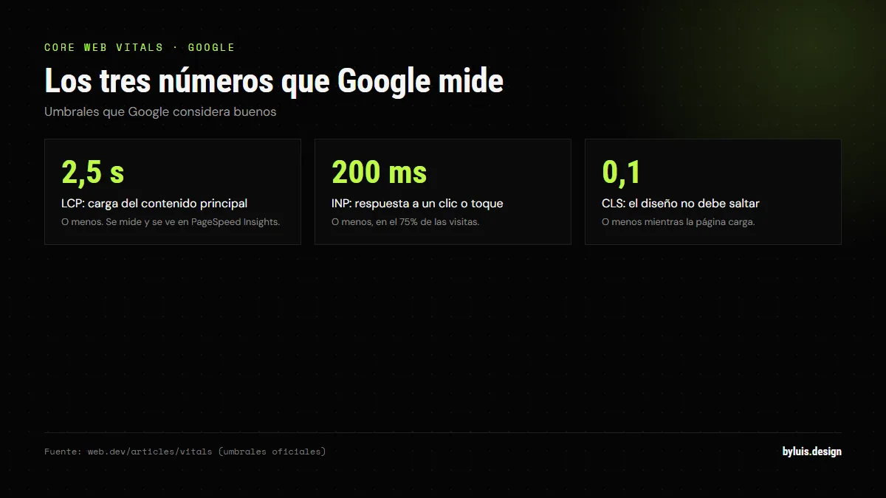

Si tu negocio no aparece en Google, es como no existir para miles de clientes que te buscan cada mes. La buena noticia: posicionar tu web en Google no exige pagar publicidad. Con las herramientas gratuitas y un proceso ordenado, cualquier negocio en Colombia puede aparecer en los primeros resultados.
Respuesta corta: para posicionar tu web gratis en 2026: 1) verifícala en Google Search Console, 2) optimiza tus palabras clave en títulos y contenido, 3) publica contenido de calidad con regularidad, 4) haz tu web rápida y 5) crea tu ficha de Google Business Profile. Resultados reales: 3-6 meses.
Paso 1: Verifica tu web en Google Search Console
Search Console es el panel de control que Google te regala. Te muestra qué páginas están indexadas, cuáles tienen errores de rastreo, si hay problemas con tu sitemap y qué consultas usan las personas para llegar a ti. Es el diagnóstico que todo SEO profesional usa primero.
- Crea una cuenta en Google Search Console (gratis con tu correo).
- Agrega tu dominio y verifícalo (por DNS, HTML o Google Analytics).
- Envía tu sitemap (generalmente en tudominio.com/sitemap.xml).
- Revisa el informe de "Cobertura" para ver páginas con errores.
Sin este paso, estás trabajando a ciegas: no sabes si Google siquiera te está leyendo.
Paso 2: Optimiza tus palabras clave (gratis)
La optimización de palabras clave es fundamental para posicionar tu web en Google de forma gratuita. No se trata de llenar textos de keywords: se trata de entender qué escribe tu cliente en el buscador y responderle mejor que nadie.
- Piensa como tu cliente: no busca "diseño web", busca "diseño web en Bogotá para tiendas de ropa".
- Usa palabras de cola larga (3-5 palabras con localidad): menos competencia, más intención de compra.
- Colócalas de forma natural en títulos, meta descripciones, encabezados y texto de las imágenes (etiqueta alt).
- Herramientas gratis: Ubersuggest y SEMrush Free para encontrar qué buscan y qué tan difícil es posicionar.
Paso 3: Publica contenido de calidad
Google premia el contenido que responde bien a lo que la gente busca. Generar contenido de alta calidad y relevante es crucial — y no me refiero a llenar tu web de texto, sino a responder preguntas reales de tus clientes: cuánto cuesta tu servicio, cómo funciona, qué incluye, ejemplos de tu trabajo.
Un blog (como este) es la forma más sostenible de hacerlo: cada artículo es una puerta de entrada nueva desde Google, con intención de compra. El contenido que ya tienes — precios, procesos, casos reales — es oro para posicionar.
Paso 4: Haz tu web rápida y amigable en móvil
Puedes tener el mejor contenido del mundo, pero si tu web carga lento o no se ve bien en móviles, Google la penalizará. En Colombia, más del 65% del tráfico web viene de celulares. Los puntos que importan:
- Velocidad: tu web debe cargar en menos de 3 segundos. Imágenes pesadas y servidores lentos son los culpables comunes.
- Móvil primero: Google indexa la versión móvil de tu web. Si se ve mal en el celular, no posiciona.
- HTTPS: tu web debe tener candado (certificado SSL). Sin él, los navegadores la marcan como insegura y Google la castiga.
Paso 5: SEO local con Google Business Profile
Si atiendes clientes en tu ciudad o en todo el país, el SEO local es tu atajo más rápido. Google My Business (hoy Google Business Profile) te brinda información valiosa sobre el rendimiento de tu sitio y oportunidades de mejora, y es la puerta de entrada al mapa y al "pack local" de Google.
- Crea tu ficha con categoría correcta (ej. "Diseñador de sitios web").
- Área de servicio: tu ciudad + regiones donde trabajas.
- Sube fotos reales y pide reseñas a tus clientes satisfechos.
- Mantén la misma información (nombre, teléfono, web) en todos lados.
Cómo decide Google qué mostrar: personas primero y E-E-A-T
Google no esconde cómo piensa. En su documentación oficial pide crear contenido "útil, confiable y pensado para personas", y propone una autoevaluación honesta antes de publicar:
- ¿Tu página aporta un valor real frente a las otras que ya aparecen en Google?
- ¿Está bien hecha o parece escrita a la carrera?
Encima está E-E-A-T: experiencia, pericia, autoridad y confiabilidad. Es el marco con el que los evaluadores de calidad de Google juzgan si un resultado merece estar arriba. No se mide con una herramienta, pero explica por qué una web con trabajos reales y clientes satisfechos le gana a una plantilla genérica: ahí tienes una ventaja que nadie copia.
Core Web Vitals: los tres números que Google mide
Google no adivina si tu web es rápida: lo mide con las Core Web Vitals, tres métricas oficiales sobre cómo se siente tu página al cargar. Estos son los umbrales que Google define como buenos:

| Métrica | Qué mide | Umbral bueno | Dónde verla |
|---|---|---|---|
| LCP | Qué tan rápido carga el contenido principal | 2,5 s o menos | PageSpeed Insights y Search Console |
| INP | Qué tan rápido responde la página a un clic o toque | 200 ms o menos | PageSpeed Insights y Search Console |
| CLS | Cuánto salta el diseño mientras carga | 0,1 o menos | PageSpeed Insights y Search Console |
Google recomienda cumplir esas métricas "para tener éxito en la Búsqueda" y aclara que van alineadas con lo que premian sus sistemas de clasificación. No son un interruptor mágico, pero una web que carga lento pierde visitas antes de que alguien te lea.
¿Cuánto tarda y cuándo pedir ayuda?
El SEO no es magia: los resultados reales llegan entre 3 y 6 meses, y las palabras clave de cola larga llegan antes que las genéricas. Si en ese tiempo tu web no avanza, el problema suele ser técnico (velocidad, indexación, estructura) — ahí un profesional con experiencia ahorra meses de prueba y error.
Nadie puede garantizarte la primera posición. Google lo dice sin rodeos en su guía de SEO: no hay secretos que posicionen tu sitio de primero. También aclara que cada cambio "puede tomar efecto en unas horas o en varios meses", y que lo sensato es esperar unas semanas antes de juzgar si funcionó. El rastreo de una página nueva, por su parte, puede tardar de días a semanas.
Errores que hunden tu posicionamiento
Google publica una lista de prácticas que considera spam, y los sitios que las usan pueden bajar de posición o desaparecer de los resultados. Los tres errores que más veo:
- Comprar enlaces. Google llama link spam a crear enlaces solo para manipular el ranking: paquetes de enlaces, comentarios con enlaces optimizados, pies de página de plantillas. Un enlace ganado de verdad aporta; uno comprado te pone en riesgo.
- Publicar contenido en masa sin valor. Generar páginas cuyo único fin es posicionar, sin contenido original ni utilidad, es spam, sin importar si se escribieron a mano o con IA. Diez artículos que responden valen más que doscientos vacíos.
- Rellenar de palabras clave. Repetir la misma palabra hasta que el texto no lo lea una persona es keyword stuffing y es motivo de penalización.
Y un error local clásico: poner en tu Perfil de Empresa una dirección que los clientes no pueden visitar. Google pide un lugar real al que puedas atender; si trabajas remoto, configura un área de servicio.
Preguntas frecuentes
¿Puedo posicionar mi web sin pagar publicidad?
Sí. El SEO orgánico es gratis: lo que inviertes es tiempo (y a veces un profesional). La publicidad (Google Ads) da resultados inmediatos pero se paga cada mes; el SEO es una inversión que se acumula.
¿Cuál es la diferencia entre SEO y Google Ads?
SEO: apareces en los resultados orgánicos sin pagar por clic; tarda meses pero es gratis a largo plazo. Google Ads: apareces en "Anuncios" pagando por cada clic; es inmediato pero se acaba cuando dejas de pagar.
¿Google cobra por aparecer?
No. Aparecer en los resultados orgánicos es gratis para cualquier web. Google cobra solo si usas Google Ads (publicidad). Lo que sí cuesta es el hosting/dominio de tu web.
¿Mi web necesita un blog para posicionar?
No es obligatorio, pero es la forma más efectiva de crear contenido nuevo que Google indexa y de captar búsquedas con intención de compra. Es la estrategia que usamos en este sitio.
¿Cuánto tarda Google en indexar una página nueva?
Google responde en su documentación: el rastreo puede tardar desde unos días hasta unas semanas. Pedir la indexación no garantiza que aparezcas de inmediato, porque sus sistemas priorizan el contenido útil y de calidad. Publica, envía el sitemap y revisa el informe de indexación en Search Console.
¿Qué es E-E-A-T y por qué importa?
Son las siglas de experiencia, pericia, autoridad y confiabilidad: el marco que usan los evaluadores de calidad de Google para juzgar un resultado. No es un puntaje que aparezca en ninguna herramienta, pero marca la diferencia entre una web genérica y una que demuestra que sabe de lo que habla.
¿Comprar enlaces ayuda a posicionar en Google?
No, y puede costarte el sitio. Google incluye los enlaces creados solo para manipular el ranking dentro de sus políticas de spam, y advierte que los sitios que las violan pueden bajar de posición o dejar de aparecer. Los enlaces ganados con contenido y relaciones reales sí funcionan.
¿Qué son las Core Web Vitals y afectan mi posición?
Son tres métricas oficiales: LCP (qué tan rápido carga el contenido principal, ideal 2,5 segundos o menos), INP (qué tan rápido responde a un clic, ideal 200 milisegundos o menos) y CLS (cuánto salta el diseño, ideal 0,1 o menos). Google las recomienda para tener éxito en la Búsqueda y se miden con PageSpeed Insights y Search Console.
Sigue leyendo
Fuentes: developers.google.com, web.dev, developers.google.com (políticas de spam), support.google.com.
Te hago un diagnóstico gratis de tu posicionamiento
Te digo exactamente por qué no estás en los resultados y qué se necesita para llegar. Sin tecnicismos, sin compromiso.